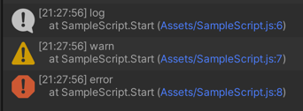

기본 로그 출력
스크립트 파일 열기
스크립트 파일을 열어 코드 에디터를 실행 시킵니다.
코드 에디터 실행
파일을 더블 클릭 합니다.
VSCode(Visual Studio Code) 를 통해 해당 스크립트 코드가 열립니다.
Start 와 Update 의 코드 내용을 제거합니다.
import { ZepetoScriptBehaviour } from 'ZEPETO.Script' export default class SampleScript extends ZepetoScriptBehaviour { Start() { } Update() { } }
로그 출력
로그 출력 코드를 추가하여 간단한 로그를 출력합니다.
기본 로그 출력
Start 부분에 코드를 추가합니다.
import { ZepetoScriptBehaviour } from 'ZEPETO.Script' export default class SampleScript extends ZepetoScriptBehaviour { Start() { console.log("log"); console.warn("warn"); console.error("error"); } Update() { } }Play 버튼을 클릭하여, 재생합니다.
메뉴를 통해 콘솔 윈도우를 활성화 합니다.
콘솔에 로그가 출력되는 것을 확인합니다.

Last modified: 18 1월 2024